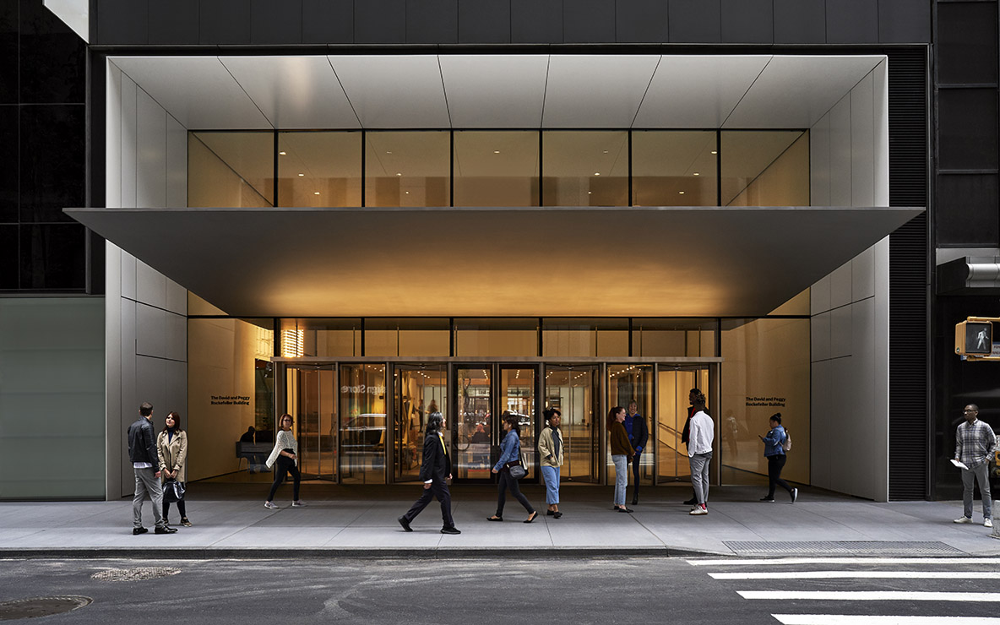

Museo Frida Kahlo (Casa Azul)
Ubicado en Coyoacán, Ciudad de México. Es la casa donde Frida nació, vivió y murió. Contiene objetos personales, obras originales y su estudio.
Visitar sitioMuseo Dolores Olmedo
En Ciudad de México. Alberga una de las colecciones más grandes de obras de Frida Kahlo y Diego Rivera.
Visitar sitio

Museum of Modern Art (MoMA)
Ubicado en Nueva York, EE. UU. Exhibe obras icónicas de Frida, como “Autorretrato con collar de espinas”.
Visitar sitioMusée National d’Art Moderne – Centre Pompidou
En París, Francia. Frida fue la primera artista mexicana en formar parte de esta prestigiosa colección.
Visitar sitio
Philadelphia Museum of Art
En EE. UU., posee varias pinturas de su etapa de madurez artística.
Visitar sitio